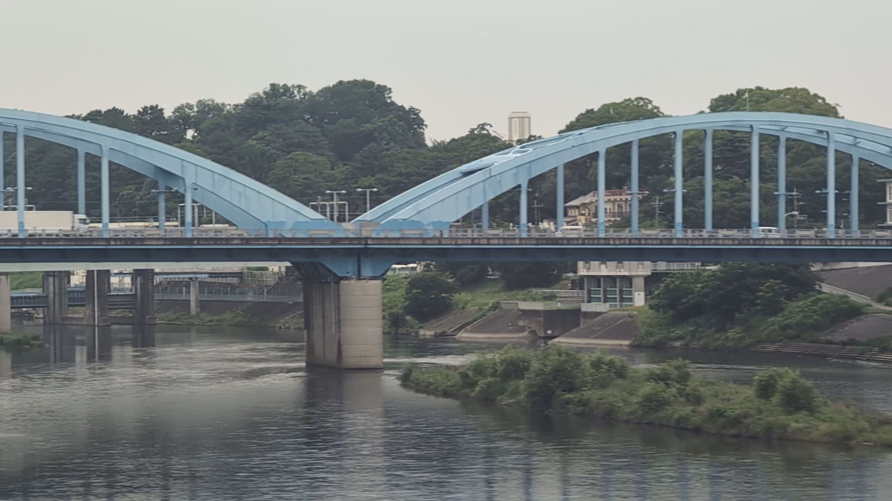
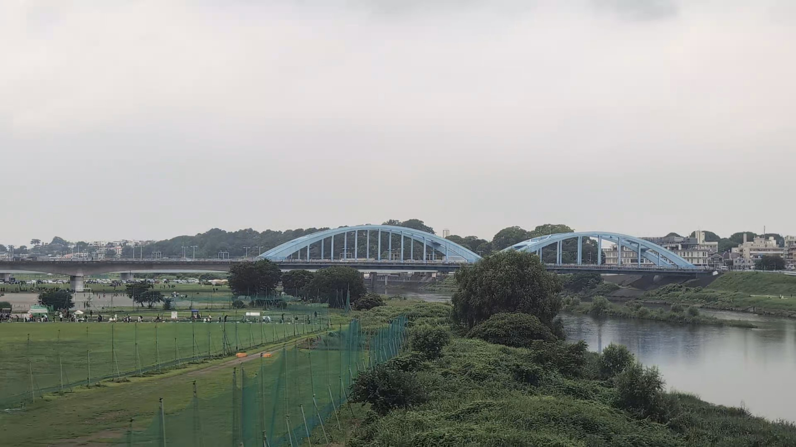
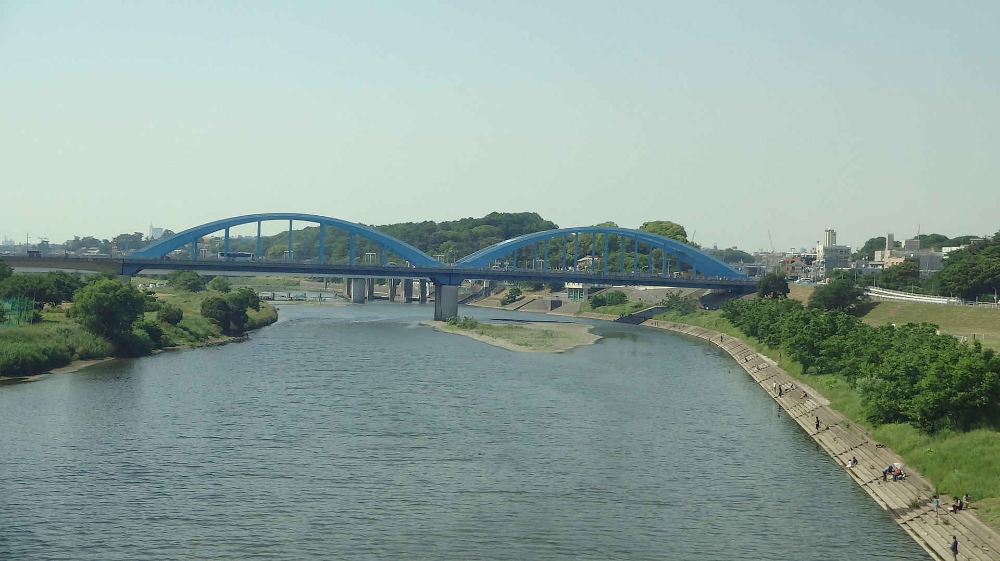
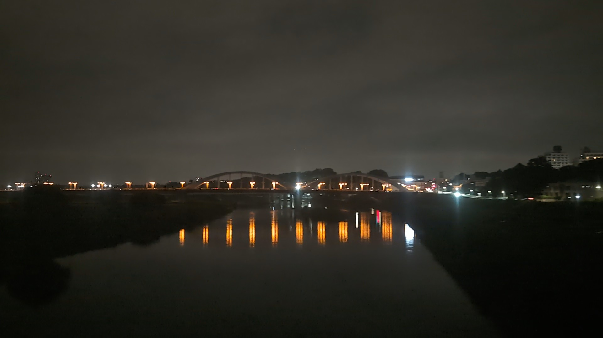

TOKAIDO SHINKANSEN WINDOW VIEW
When can you see Maruko Bridge from the Shinkansen?
A blue bridge over the Tama.

- Section
- Shinagawa → Shin-Yokohama, near the Tama River
- Seat side
- Seat E · mountain side
- Timing
- About 13 minutes after leaving Tokyo on a Nozomi train
- Photos
- 4 photos
Location at a glance
Open mapSatellite imagery helps you recognize nearby landmarks.
How to find Maruko Bridge
After Shinagawa, as the train heads toward Shin-Yokohama, Maruko Bridge appears on the Seat E side around the Tama River. It is a small early shift from Tokyo's city blocks to river scenery. The bridge is also known from Shin Godzilla, and the green area behind it includes Kamenokoyama Kofun. The view is brief, but the blue arch shape makes it easier to spot.
If you are traveling from Tokyo toward Shin-Osaka, start watching the Seat E · mountain side window as you approach Shinagawa → Shin-Yokohama, near the Tama River. If you are traveling toward Tokyo, the order is reversed.
Why this view matters
Maruko Bridge is one of the window views that make the Tokaido Shinkansen more than a transfer. The train moves fast, so visibility depends on weather, seat position, and timing.
Maruko Bridge in photos


